시각디자인기사 (2021-05-15 기출문제)
1과목: 시각디자인론
1. 특정 상품에 대한 고정관념이 있어 브랜드 충성도와 선호도가 높고 반복적, 습관적 구매를 하는 소비자 집단은?
- 가격 적응의 소비자 집단
- 신소비자 집단
- 합리적 소비자 집단
- 관습적 소비자 집단
(정답률: 80%)

2. 문제에 관련된 항목들을 나열하고, 그 항목별로 문제의 특정적 변수에 대해 검토해봄으로써 아이디어를 구상하는 방법은?
- 시네틱스법
- 연꽃 만개법
- 마인드 맵
- 체크리스트법
(정답률: 58%)
3. 오스본(Alex Osborn)에 의해 1930년대 후반부터 시작된 창조적 아이디어 방법으로 광고 아이디어 기획 회의에서 보편적으로 널리 사용되는 방법은?
- 시네틱스법
- 브레인스토밍법
- 체크리스트법
- 입출력법
(정답률: 66%)
4. 기획서 작성 시 기획내용들의 전체 흐름도를 도식화 한 것은?
- Flow chart
- Story board
- Pie chart
- Contents
(정답률: 40%)
5. 멀티미디어 프로젝트 기획 진행 순서가 가장 보편적이고 합리적인 것은?
- 아이템 선정 → 시장조사 → 개발전략수립 → 개발일정, 예산결정 → 마케팅전략검토 → 기획서화(발표)
- 시장조사 → 마케팅전략검토 → 개발일정, 예산결정 → 아이템선정 → 개발전략 수립 → 기획서화(발표)
- 개발전략 수립 → 개발일정, 예산결정 → 마케팅전략검토 → 아이템선정 → 시장조사 → 기획서화(발표)
- 개발전략 수립 → 마케팅전략검토 → 시장조사 → 아이템 선정 → 개발일정, 예산결정 → 기획서화(발표)
(정답률: 75%)
6. 큐비즘(Cubism)에 영향을 받은 몬드리안이 전개한 디자인 사조는?
- 퓨리즘
- 팝 아트
- 데 스틸
- 미래파
(정답률: 58%)
7. 앙포르멜적 추상 일러스트레이션에 대한 설명으로 옳은 것은?
- 직선, 삼각형, 원 등 기하학적인 형태를 이용한 일러스트레이션
- 자연계에서 찾아볼 수 있는 형태를 이용한 일러스트레이션
- 인물이나 경치 등을 주관성 없이 극사실화 하는 일러스트레이션
- 우연성이 강한 터치나 마티에르 등에 의한 비구상적 일러스트레이션
(정답률: 57%)
8. 주로 인물을 소재로 익살, 유머, 풍자 등의 효과를 과장되게 표현한 그림은?
- 일러스트레이션 (Illustration)
- 캐리커쳐 (Caricature)
- 꼴라쥬 (Collage)
- 데생 (Dessin)
(정답률: 85%)
9. 상표와 상호에 관한 설명으로 틀린 것은?
- 상표는 자기의 상품을 타인의 상품으로부터 식별하기 위하여 상품에 부착하는 표장이다.
- 상호는 법인이나 개인이 영업상 주체를 표시하는 명칭이다.
- 상표는 상표법(특허청)의 적용을 받고 상호는 세법(세무서)의 적용을 받는다.
- 상호는 명칭일 뿐이지만 상표는 문자 뿐 아니라 도형, 캐릭터 등도 될 수 있다.
(정답률: 43%)
10. 슈퍼그래픽(super graphic)의 목적과 거리가 먼 것은?
- 예술적 환경 조성
- 도시환경 미화
- 소비자 참여
- 다양한 홍보 효과
(정답률: 66%)
11. 신문 광고의 특징이 아닌 것은?
- 대량의 도달 범위
- 높은 신뢰도
- 지역성
- 반복 학습 효과
(정답률: 63%)
12. 기업이 디자인을 비즈니스 활동으로 인식하는 가장 큰 이유는?
- 디자인이 마케팅, 재정, 생상 등과 같이 경영을 필요로 하기 때문
- 디자인이 비즈니스의 목적에 가장 중요하기 때문
- 엔지니어가 만든 제품을 아름답게 보이기 위하여
- 소비를 장려하고 판매를 촉진하기 위하여
(정답률: 43%)
13. 심벌마크(symbol mark)의 설명으로 옳은 것은?
- 조직체의 이념, 목적, 성격 등을 시각적으로 상징화 한 것이다.
- 기업의 브랜드에만 사용되는 그림 문자이다.
- 광고 및 홍보매체에 차별성과 주목성을 높이는 문자이다.
- 제품의 상징을 위해 특별이 제작된 그림이다.
(정답률: 66%)
14. 다음 중 팝아트와 거리가 먼 작가는?
- 앤디워홀(Andy Warhol)
- 올덴버그(C. Oldenberg)
- 리차드 헤밀턴(R. Hamilton)
- 빅토르 바자렐리(Victor Vasarely)
(정답률: 43%)
15. 다음 ( )안에 들어갈 단어로 옳은 것은?
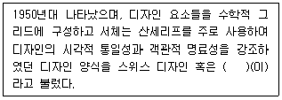
- 헬베티카
- 신 타이포그래피
- 국제 타이포그래피 양식
- 다다(Dada)
(정답률: 31%)
16. 우리나라에서 일반적으로 종이두께를 나타낼 때 사용하는 단위는?
- g/m2
- g/inch2
- kg/m2
- 파운드/inch2
(정답률: 70%)
17. 디자인보호법상 심미성에 대한 설명으로 볼 수 없는 것은?
- 해당 물품으로부터 미를 느낄 수 있도록 처리되어 있는 것을 심미성이라고 한다.
- 디자인으로서 짜임새가 없고 조잡감만 주는 것으로서 미감을 거의 일으키지 않는 것은 심미성이 있다고 볼 수 없다.
- 미감을 일으키지는 않지만 기능, 작용효과를 주목적으로 한 것은 심미성이 있다고 본다.
- 디자인보호법상 디자인으로 성립하기 위해서는 반드시 심미성이 있어야 한다.
(정답률: 58%)
18. 1960년대 뉴욕을 중심으로 일어나 운동으로 포스터나 광고, 만화 등 대량생산품의 이미지를 재구성하여 대중문화를 미술의 세계와 동화시켰던 미술사조는?
- 옵 아트
- 멤피스 스타일
- 키치
- 팝 아트
(정답률: 62%)
19. 실용신안법의 보호대상인 것은?
- 전자를 응용하여 처음으로 전화기를 개발했다.
- 전화기 외관의 형상과 색채를 남다르게 디자인하였다.
- 분리된 송·수화기를 일체화 시키는 개발을 하였다.
- 기억에 남고 쉽게 부를 수 있는 전화기 명칭을 개발했다.
(정답률: 38%)
20. 지식재산을 보호하는 법률에서 산업재산권법에 속하지 않는 것은?
- 실용신안법
- 상표법
- 디자인보호법
- 저작권법
(정답률: 23%)
2과목: 조형심리학
21. 인간행동을 환기시키고 행동의 방향을 정해주며 통합시키는 내적 요인은?
- 가치(value)
- 동기(motivation)
- 필요(wants)
- 욕구(needs)
(정답률: 68%)
22. 광고나 편집디자인에서 화면에 리듬감을 주기 위해 고려해야 할 사항은?
- 글자의 크기를 고르게 한다.
- 작은 크기의 그림이나 사진 등은 큰 박스 속에 모아서 배열한다.
- 자간과 행간에 변화를 준다.
- 같은 형태의 그리드를 사용하여 배치한다.
(정답률: 75%)
23. 대칭에 대한 설명으로 틀린 것은?
- 하나의 점을 중심으로 하여 원형이 되는 모티브를 점 주위에 일정한 각도로 회전시켜 배열하는 것을 방사대칭이라 한다.
- 중심점을 통하는 직선상에 있어서 대립하는 도형상의 2개의 점이 중심점에서 등거리에 있는 것은 점대칭이라 한다.
- 회전각이 180°일 때는 두 장짜리 프로펠러와 같은 형태가 되며 역대칭이라 한다.
- 등척 대칭에는 이동, 반사 2가지가 있다.
(정답률: 58%)
24. 선에 대한 설명으로 틀린 것은?
- 수평선은 안정, 침착, 고요, 영원, 무한으로 정적이고 소극적인 요소가 강하다.
- 수직선은 낙하, 상승의 운동력이 가해져 직접적이고 긴박한 긴장감을 표출한다.
- 자유곡선형은 우아하고 유연하지만 불명료나 무질서함을 표출한다.
- 기하곡선형은 강렬, 에민, 직접적, 대담함을 표출한다.
(정답률: 63%)
25. 대상을 통합체로 보이게 하는 조건 중 거리가 먼 것은?
- 조명이 불충분한 상황
- 대상이 가까이 있는 상황
- 대상이 제시된 시간이 매우 짧은 상황
- 형태가 기억된 후 상당한 시간이 지난 상황
(정답률: 23%)
26. 미학의 연구 대상에 대한 설명 중 틀린 것은?
- 인간이 느끼는 모든 부분과 정서를 탐구한다.
- 예술에서만 나타나는 미적인 것을 탐구한다.
- 이성보다는 감성이 지배적인 세계를 탐구한다.
- 모든 미적인 현상을 총체적으로 탐구한다.
(정답률: 74%)
27. 다음 그림은 G. 키리코의 <거리의 신비와 우수>라는 작품이다. 이 작품은 몽환적이면서 불길한 분위기를 전달하고 있다. 이 작품의 비현실적 분위기를 이끌어낸 가장 중요한 요인은?
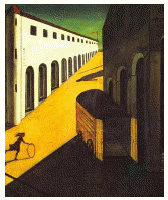
- 실체가 나타나지 않은 그림지를 원경에 배치했다.
- 어긋난 투시도법을 사용해서 공간이 비틀린 것처럼 보인다.
- 건물에 사람이 안 보인다.
- 장의 차량이 있다.
(정답률: 66%)
28. 지각과 감각에 관한 설명 중 틀린 것은?
- 지각은 보통 시각(視覺)과 인지(認知) 2가지로 구분된다.
- 레이드(T. Reid)는 감각과 외계의 자극대상과의 관계까지 모두 포함한 광범위한 인지과정을 지각이라 했다.
- 감각은 비교적 단일한 자극 수용기의 작용만으로 결정되는 지각을 의미한다.
- 감각기는 특정의 자극에 대해서만 반응하는 특성을 지닌다.
(정답률: 16%)
29. 정투상에서 투상면이 경사각을 가지고 있을 때 면적의 실형이 나타나지 않는다. 일반적으로 이러한 형태를 투상 할 때 보조투상으로 작도하는 것은?
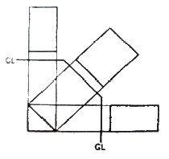
- 부투상
- 단면투상
- 측면투상
- 입체투상
(정답률: 16%)
30. 석양 무렵, 사물의 색이 청색조를 띄게 되는 현상은?
- 잔상 현상
- 푸르킨예 현상
- 리프만 현상
- 마하밴드 현상
(정답률: 74%)
31. 다음 그림에 해당하는 선의 종류는?
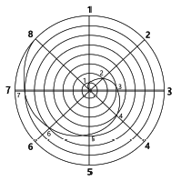
- 아르키메데스 소용돌이선
- 유크리드 소용돌이선
- 피타코라스 소용돌이선
- 가우디 소용돌이선
(정답률: 72%)
32. 전항에 전 전항을 더하여 가는 수열로서 황금비를 설명하는 것은?
- 조화 수열
- 등비 수열
- 피보나치 수열
- 펠의 수열
(정답률: 67%)
33. 다음 그림은 무엇을 하기 위한 작도인가?
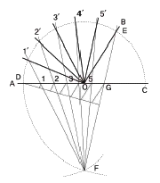
- 각의 이동
- 각의 n등분
- 평행선 긋기
- 원 O에 내접하는 정n각형
(정답률: 59%)
34. 항상성의 정도가 달라지기 위한 조건에 해당되지 않는 것은?
- 대상의 특성
- 시야의 조건
- 드로잉의 기법
- 관찰자의 개성
(정답률: 35%)
35. 시지각에 있어서 대상물이 눈으로부터 멀어질수록 망막에 맺히는 상(像)은 거리에 비례하여 작아지게 되지만 시지각은 거의 변하지 않는다. 이와 같이 시지각의 구조 속에 망막의 상을 실제의 크기와 거의 같게 지각하는 성질은?
- 가시성
- 가독성
- 망막성
- 항상성
(정답률: 54%)
36. 차이가 분명한 사물을 보편적인 사물보다 더 잘 기억하는 현상은?
- 위협의 감지
- 폰 레스토프 효과
- 기대 효과
- 삼등분의 법칙
(정답률: 66%)
37. 시각적 질감에 대한 설명으로 옳은 것은?
- 물체의 빛에 대한 반응이다.
- 물체의 구조에 대한 반응이다.
- 면직물 표면의 특성만을 의미한다.
- 직접 만져서 확인할 수 있어야 한다.
(정답률: 60%)
38. 유클리드 요소에 나타난 기하학의 원리는?
- 비율과 비례
- 변화와 통일
- 공간과 규모
- 대비와 대칭
(정답률: 58%)
39. 다음에서 설명하는 디자인 요소는?
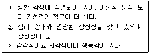
- Shade
- Size
- Color
- Texture
(정답률: 68%)
40. 다음 그림에 해당하는 착시 유형은?
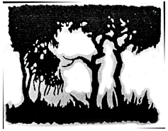
- 겹침의 착시
- 반전하는 착시
- 회전에 의한 착시
- 깊이의 착시
(정답률: 30%)
3과목: 광고학
41. 다음 중 기업광고의 장점이 아닌 것은?
- 객관적인 광고효과 측정이 용이하다.
- 기업의 이미지 확립에 긍정적인 역할을 한다.
- 기업의 대외적 가치를 상승시켜, 무형의 자산을 형성하는데 도움을 준다.
- 중소기업 간의 기술력의 차이가 거의 없는 시장 상황에서 경쟁력을 부여한다.
(정답률: 57%)
42. 마케팅 믹스의 4P가 아닌 것은?
- Promotion
- Product
- Price
- Positioning
(정답률: 58%)
43. 다음 ( )안에 알맞은 것은?
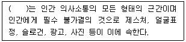
- 의미
- 은유
- 환유
- 기호
(정답률: 54%)
44. 다음 중 3B 광고의 주제는 무엇인가?
- 구독률, 열독률, 기억률
- 모델, 환경, 기술
- 소년, 청년, 노년
- 미인, 아기, 동물
(정답률: 22%)
45. 소비자의 상품이나 서비스에 대한 실용적이고 기능적인 욕구에 초점을 맞추어 그 특성을 강조하는 접근방법은?
- 선택 소구
- 이성 소구
- 감정 소구
- 비교 소구
(정답률: 49%)
46. 저관여 브랜드 선택의 결정요인이 아닌 것은?
- 무작위로 모아진 정보를 이용한다.
- 능동적인 수용자들이 선택한다.
- 먼저 구매하고, 그리고 평가한다.
- 퍼스낼리티, 생활양식, 준거집단이 조금 영향을 미친다.
(정답률: 12%)
47. 광고 메시지의 전달력을 감소시키는 것은?
- 관여도를 높이기 위한 질문을 한다.
- 추상적인 표현으로 상상력을 높인다.
- 보다 구체적인 용어를 선택한다.
- 시청자들이 귀를 기울이도록 동기를 부여한다.
(정답률: 40%)
48. 다음 중 도달(reach)을 설명하는 것은?
- 특정 기간 동안 특정한 매체에 적어도 한번 이상 노출된 사람 또는 가구의 수를 지칭하는 개념
- 특정 기간 동안 특정한 매체에 한 번도 노출되지 않은 사람 또는 가구의 수를 지칭하는 개념
- 기간에 제한 없이 특정한 매체에 적어도 한번 이상 노출된 사람 또는 가구의 수를 지칭하는 개념
- 특정 기간 동안 불특정의 매체 스케줄에 여러 번 노출된 매체 스케줄을 지칭하는 개념
(정답률: 63%)
49. AIDMA 원칙이 옳게 나열된 것은?
- Attention → Interest → Dimension → Mood → Action
- Attention → Interest → Desire → Memory → Action
- Attention → Innovation → Demand → Memory → Action
- Attention → Image → Decision → Manner → Action
(정답률: 63%)
50. 프로덕트 콘셉트 작성 시 체크 포인트로 틀린 것은?
- 판단이 불분명한 것은 모두 기록한다.
- 가능한 한 짧게 작성한다.
- 중요한 점이 누락되지 않도록 한다.
- 객관적으로 작성하여 누구라도 알기 쉽게 한다.
(정답률: 44%)
51. 커뮤니케이션의 요소 중 송수신자 사이에서 발생하는 잡음의 종류에 속하지 않는 것은?
- 공간적 잡음
- 물리적 잡음
- 의미적 잡음
- 심리적 잡음
(정답률: 32%)
52. 인쇄 기술의 등장이 중세 서구사회의 커뮤니케이션에 미치는 영향에 관한 설명으로 틀린 것은?
- 커뮤니케이션의 일대혁명인 독일의 구텐베르크의 금속활자 발명은 책의 대량인쇄를 가능하게 하였다.
- 정보 소비자로서 상공 세력은 서구에서 인쇄술을 매스미디어로 발전시키는데 지대한 영향을 미쳤다.
- 대량 복제가 가능한 인쇄 기술은 사회를 분열시키고 지방어의 발달을 촉진시켰다.
- 인쇄 기술의 발전을 통하여 인간은 순차적이고 논리적인 사고에 익숙하게 되었다.
(정답률: 66%)
53. 다음 ( )안에 들어갈 알맞은 것은?
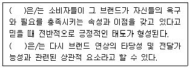
- 브랜드 연상의 유형
- 브랜드 연상의 호감도
- 브랜드 연상의 강도
- 브랜드 연상의 독특성
(정답률: 71%)
54. 같은 상표의 반복구입, 구입회수의 비율이 높을수록 그 제품에 대한 충실도가 높다고 할 수 있다. 이를 지칭하는 것은?
- 브랜드 셰어(brand share)
- 브랜드 정책(brand policy)
- 브랜드 로열티(brand loyalty)
- 브랜드 리더(brand leader)
(정답률: 59%)
55. 마케팅의 1차적인 목표를 설명한 것으로 옳은 것은?
- 고객의 만족과 기업의 적정이윤 실현
- 시장경쟁체계를 통하여 제품의 질적 향상을 도모
- 경영자와 생산자의 의욕을 높이는 역할
- 사회 경제적으로 유용한 이익을 제공
(정답률: 52%)
56. 포지셔닝(positioning) 전략을 적용할 때 선행되어야 하는 것은?
- 시장세분화
- 효과 측정
- 매체 조사
- 비용 절감
(정답률: 46%)
57. 다음 ( )안에 들어갈 알맞은 것은?
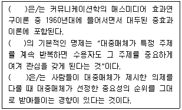
- 의제설정 기능
- 일반화 가능성
- 대리 효과
- 성향 이론
(정답률: 16%)
58. 장기적 브랜드 이미지 형성에 가장 영향을 미치는 결정적 요소는?
- 디자인과 디스플레이
- 광고와 세일즈 프로모션
- 광고와 PR
- 품질과 서비스
(정답률: 66%)
59. 광고대행사의 주요 조직 업무가 아닌 것은?
- 광고주와 연락을 유지하는 어카운트 서비스 업무
- 창작을 주로 하는 크리에이티브 업무
- 언론기관 운영 업무
- 갖가지 조사를 하는 조사 업무
(정답률: 54%)
60. 마케팅관리 철학 특징의 변화를 시대 순으로 올바르게 나열한 것은?
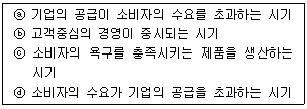
- ⓓ→ⓐ→ⓑ→ⓒ
- ⓐ→ⓓ→ⓒ→ⓑ
- ⓓ→ⓐ→ⓒ→ⓑ
- ⓓ→ⓒ→ⓐ→ⓑ
(정답률: 32%)
4과목: 색채학
61. 색채조화에 관한 설명 중 틀린 것은?
- 색의 3속성을 고려한다.
- 색채조화에서 명도는 중요하지 않다.
- 색상이 다르면 색조를 유사하게 한다.
- 면적비에 따라 조화의 느낌이 달라질 수 있다.
(정답률: 74%)
62. 오스트발트 색채조화론의 내용과 관련된 용어가 아닌 것은?
- 등백계열의 조화
- 등순계열의 조화
- 동등조화
- 윤성조화
(정답률: 17%)
63. 다음 중 명도가 가장 높은 색은?
- 회색
- 검정색
- 흰색
- 녹색
(정답률: 68%)
64. 명소시에서 암소시로 이행할 때 붉은색은 어둡게 되고, 청색은 상대적으로 밝아지는 것과 관련이 있는 것은?
- 메타메리즘
- 색각이상
- 푸르킨예 현상
- 착시현상
(정답률: 72%)
65. 오스트발트 색체계의 색상에 대한 설명이 틀린 것은?
- 24색상환으로 1~24로 표기한다.
- 색상은 헤링의 4원색을 기본으로 한다.
- Red의 보색은 Sea Green 이다.
- Red는 1R~3R로, 색상번호는 1~3에 해당된다.
(정답률: 50%)
66. 초등학교의 색채계획에 관한 설명으로 틀린 것은?
- 일반교실은 실내 어는 곳이나 충분한 조도가 있게 한다.
- 일반교실은 안정된 분위기를 위해 색상의 종류를 제한한다.
- 미술실은 정확한 색분별을 위해 벽면과 바닥을 무채색으로 하는 것이 좋다.
- 음악실은 즐거운 분위기를 위해 한색계통의 다양한 색채들을 사용한다.
(정답률: 59%)
67. 미각과 색채의 관계로 연결된 것 중 잘못된 것은?
- 쓴맛 : 회색
- 단맛 : 빨강
- 신맛 : 연두
- 짠맛 : 청록
(정답률: 21%)
68. 감마(Gamma)에 대한 설명으로 틀린 것은?
- 컴퓨터 모니터 또는 이미지 전체의 기준 어둡기(밝기)를 말한다.
- 모니터 성능에 따라 CMYK 각각의 감마를 결정할 수 있다.
- 기본 감마값에서 모니터의 상태에 따라 캘리브레이션을 할 수 있다.
- 가장 일반적으로 통용되는 감마를 사용하는 것이 좋다.
(정답률: 27%)
69. 슈브뢸(M. E. Chevreul)의 색채 조화론과 관계가 없는 것은?
- 도미넌트 컬러
- 보색, 배색의 조화
- 세퍼레이션 컬러
- 동일 색상의 조화
(정답률: 34%)
70. 불안감을 느끼는 사람에게 안정을 취하게 할 수 있는 공간색으로 적합한 것은?
- 파랑
- 흰색
- 회색
- 노랑
(정답률: 25%)
71. 색을 정확히 보기 위한 관찰방법 설명으로 잘못된 것은?
- 색의 관찰은 몇 분간 조명광하에서 작업면의 유채색에 눈을 순응시키고 나서 한다.
- 시료면과 표준면을 때때로 좌우를 바꿔 넣어 비교한다.
- 연속하여 비교작업을 하는 경우에는 몇 분 간격의 주기로 눈을 쉬면서 한다.
- 선명한 색을 관찰한 직후에 엷은 색 또는 보색에 가까운 색상을 가진 색을 계속 비교해서는 안된다.
(정답률: 29%)
72. 색 지각을 일으키는 가장 기본적인 요건은?
- 속성
- 프리즘
- 빛
- 망막
(정답률: 63%)
73. 빛의 3원색의 설명으로 옳은 것은?
- 다른 색으로 분해 가능하다.
- 다른 색광의 혼합에 의해 만들 수 있다.
- 이들 색을 모두 혼합하면 백색광이 된다.
- 이들로부터 모든 색을 만들 수 없다.
(정답률: 78%)
74. 채도에 따른 색의 구분을 할 때 명도는 높고 채도가 낮은 색은?
- 청색
- 명청색
- 암청색
- 탁색
(정답률: 70%)
75. 장파장의 색상은 시간의 경과를 길게 느끼고 단파장의 색상은 시간의 경과를 짧게 느낀다는 색채의 기능주의적 사용법을 역설한 사람은?
- 하버트 리드
- 오토와그너
- 파버 비렌
- 요하네스 이텐
(정답률: 52%)
76. 주황색 위에 초록색을 놓으며 주황색은 더욱 붉게 보이고 오록색은 파랑 기미가 있는 초록으로 보이는 현상은?
- 색상대비
- 명도대비
- 연변대비
- 면적대비
(정답률: 55%)
77. 먼셀 색체계에서 색의 3속성에 대한 설명으로 틀린 것은?
- 기본 5색은 R, Y, G, B, P 이다.
- KS에서는 20색상환을 채택하고 있다.
- 색의 포화도와 채도는 비례 관계에 있다.
- 유채색 중 가장 명도가 낮은 색은 남색이다.
(정답률: 38%)
78. 영·헬름흘츠(Young-Helmholtz)의 3원색설에 관한 설명 중 옳은 것은?
- 추상체의 기능이 없고, 간상체의기능만 있는 상태를 전색맹이라 한다.
- 황색과 백색의 감각과 대비 잔상을 잘 설명할 수 있다.
- 동화작용에 의하여 백, 적, 황색의 감각이 생긴다.
- 적, 녹, 황색이 기본색이어서 3원색설이라고 한다.
(정답률: 18%)
79. 병치가법혼색의 응용과 관련 있는 것은?
- 유화 그림
- 도장 작업
- 컬러 TV
- 천의 염색
(정답률: 61%)
80. 오스트발트의 등색상 삼각형에 있어서 등백색계열을 나타내는 것은?
- pl – pi - pg
- la – na - pa
- nl – ni - pi
- lg – ni - pl
(정답률: 32%)
5과목: 사진 및 인쇄제판론
81. 특수 인화기법의 하나로 흰 선과 검은 선이 피사체 윤곽에 나타나 조각의 부조(浮彫)를 보는 것과 같은 효과를 내는 것은?
- 포토그램
- 포토몽타쥬
- 디포메이션
- 릴리프 포토
(정답률: 39%)
82. 다음 중 평판 인쇄용 제판재료로 가장 많이 사용되는 금속은?
- 알루미늄(Al)
- 오토와그너(Cu)
- 아연(Zn)
- 크롬(Cr)
(정답률: 29%)
83. 특성곡선(characteristic curves)에 관한 내용으로 옳지 않은 것은?
- 감마(γ) 값이 클수록 경조이다.
- 직선의 기울기가 완만하면 경조이다.
- 직선의 기울기는 콘트라스트의 기준이다.
- 직선상 임의의 두 점 사이의 농도차를 로그 노광량차로 나눈 값을 감마(γ)라고 한다.
(정답률: 33%)
84. 가시광선의 파장영역은?
- 250 ~ 550nm
- 380 ~ 780nm
- 480 ~ 830nm
- 530 ~ 980nm
(정답률: 73%)
85. 부착된 생성물이나 인화지의 유제, 베이스 속에 스며든 처리 약품을 제거하는 과정은?
- 현상
- 정지
- 정착
- 수세
(정답률: 57%)
86. 피사계심도에 관한 설명으로 옳지 않은 것은?
- 조리개를 조일수록 얕아지고 열수록 깊어진다.
- 사용 렌즈의 초점거리가 짧을수록 깊어지고 길수록 얕아진다.
- 촬영거리가 멀수록 깊어지고 가까울수록 얕아진다.
- 초점을 맞춘 곳에서 먼 쪽은 깊어지고 가까운 쪽은 얕아진다.
(정답률: 35%)
87. 패닝(panning)기법을 이용한 촬영에 대한 설명으로 옳지 않은 것은?
- 비경은 카메라 운동방향으로 흔들려 있다.
- 초고속 셔터 스피드를 이용하여 순간 촬영한다.
- 빠른 속도의 피사체를 촬영하는데 효과적이다.
- 카메라를 피사체의 동작에 따라 움직이며 촬영한다.
(정답률: 24%)
88. 피사체를 올려다보는 카메라의 각도를 말하면 건물의 장엄함이나 신체를 길어 보이게 하는 효과를 주는 카메라 앵글은?
- 앙각(low angle)
- 부감(high angle)
- 대향 위치
- 클로즈업
(정답률: 61%)
89. 스튜디오 상품촬영 시 조명의 빛을 한 곳에 집광시키기에 가장 효과적인 장비는?
- 스누트
- 엄브렐러
- 소프트 박스
- 백색 리플렉터
(정답률: 35%)
90. 사용하는 필름과 광원의 광질 차이에서 오는 색조의 불균형을 맞추기 위한 필터는?
- 색온도 변환 필터
- 콘트라스트 필터
- 편광 필터
- 크로스 스크린 필터
(정답률: 34%)
91. C, M, Y 각 색의 밑 색을 제거하여 BK색으로 바꾸기 위한 목적으로 사용하는 것은?
- UCA
- UCR
- 계조수정
- USM
(정답률: 44%)
92. 인쇄 제판이 끝나고 본 인쇄에 들어가기 전 색조 등이 제대로 구현되었는지를 확인하기 위해 필요한 공정은?
- 편집
- 제판
- 정전 인쇄
- 교정 인쇄
(정답률: 66%)
93. 다음 중 점도가 가장 낮은 잉크를 사용하는 인쇄 방식은?
- 평판 인쇄
- UV 인쇄
- 볼록판 인쇄
- PCB용 금속인쇄
(정답률: 27%)
94. 인쇄 판면이 유연하여 탄력이 있으므로 종이나 헝겊처럼 유연한 소재뿐만 아니라 유리, 금속을 비롯한 딱딱한 판자나 성형물의 면에 대해서도 접착인쇄를 할 수 있는 인쇄 방식은?
- 볼록판 인쇄
- 그라비어 인쇄
- 오프셋 인쇄
- 스크린 인쇄
(정답률: 40%)
95. 슬리트(slit)의 이동으로 노출이 되는 카메라 셔터 형태는?
- 리프셔터
- 드롭셔터
- 포컬플레인셔터
- 렌즈셔터
(정답률: 14%)
96. 표지를 속장보다 조금 크게 만들어 약간 튀어나오게 하면 사전류에 많이 사용되는 제책 방식은?
- 반양장 제책
- 호부장 제책
- 양장 제책
- 중철 제책
(정답률: 52%)
97. 국판(A5) 책자의 크기로 옳은 것은?
- 74 × 102 mm
- 1⑤ × 148 mm
- 148 × 210 mm
- 210 × 207 mm
(정답률: 55%)
98. 인쇄의 5요소 중 화선부를 눈에 보이도록 하여 화선부와 비화선부의 차이를 나타나게 하는 것은?
- 원고 (copy)
- 색재 (ink)
- 피인쇄체 (paper)
- 인쇄판 (printing plate)
(정답률: 29%)
99. 책등의 마무리 방식 중 표지의 등과 속장의 등이 바깥쪽으로 둥글게 달라붙게 하는 것은?
- 타이트 백
- 홀로 백
- 플렉시블 백
- 배킹 백
(정답률: 8%)
100. 다음 중 현상액의 산화를 방지하는데 사용되는 것은?
- 탄산나트륨
- 아황산나트륨
- 브롬화칼륨
- 메톨
(정답률: 50%)